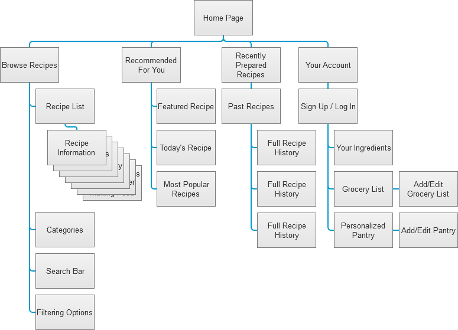
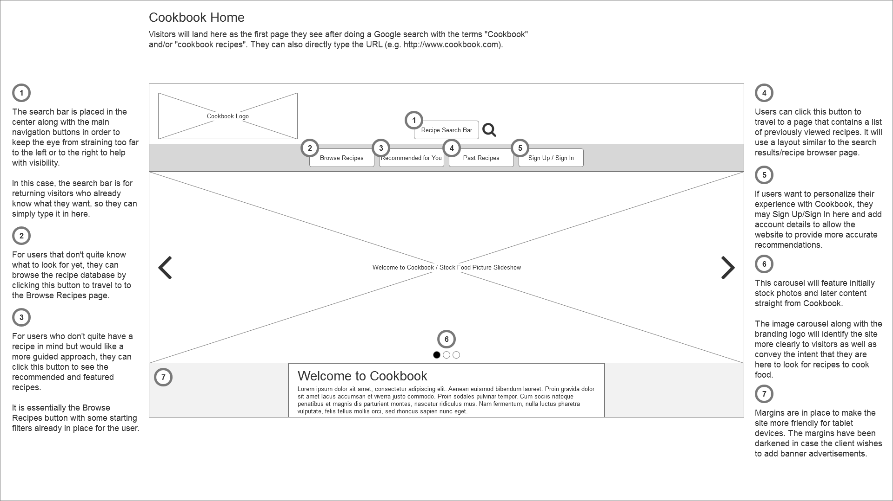
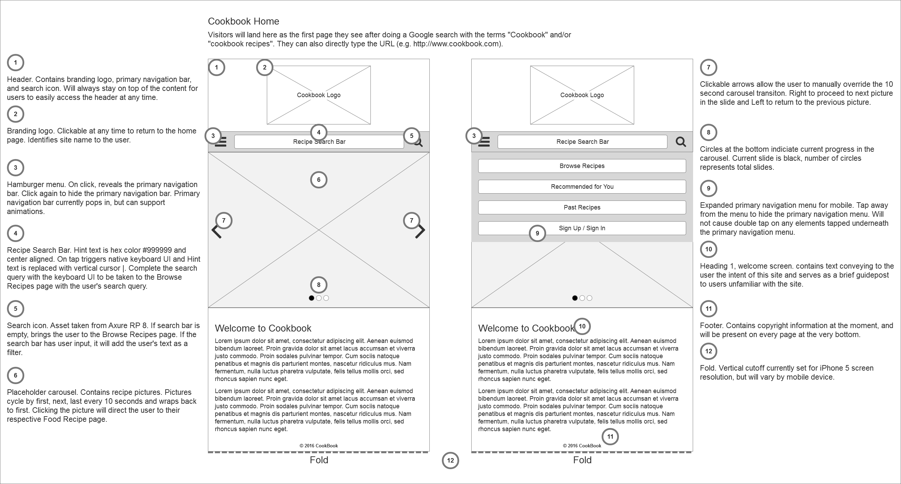

Sole UX Designer with peer review from fellow designers at California State University, Fullerton. Organized sitemap and submitted wireframes for peer review.
For the first week we learned about the nuances between sibling pages, child pages, and stacked pages. To avoid confusing the development team, we were to practice what we learned in our own sitemap.
For my sitemap I chose to have a flat navigation style like the iOS App Store and stock Music App. This style lends itself to easily read recipe categories.
After peers reviewed my sitemap, I received feedback that it took too much user input to navigate around. I took that feedback into consideration moving into the second week.
On week 2 we had to generate wireframes based on our revised sitemap for the Home screen and two child pages. We were required to annotate on our wireframe and the homework. Without annotations to explain our design reasoning, peer reviewers would have to use their own judgment when discerning a UI element's purpose.
I decided to make the hero images a carousel of featured recipes to highlight relevant information to visitors. The search bar is also in plain view, allowing for the user to invoke the search function at any time while visiting the site.
For the final week, we had to create mobile wireframes to accompany our desktop wireframes. While the sizes do vary wildly from device to device, we only had to focus on smart phones. We instead had to consider the different context between accessing a website from a desktop and accessing a website from mobile.
I trimmed most of the core functionality of the desktop version to make it fit within a mobile screen and maintain readability. I understood that mobile users have a set task in mind already, so only the most important elements should be prominent.
